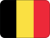

Belgium
History
Belgium declared independence or statehood, marking a decisive political break.
Belgium's sovereignty gained formal recognition.
The first state reform began the shift from a unitary kingdom towards a federal state.
 Part ofEuropeMore countries, cities and routes.
Part ofEuropeMore countries, cities and routes.Short facts
RegionWestern Europe
LanguageGerman, French
Time zoneCET (UTC+1)
Drives onRight
Worth seeing
- Bruges: A perfectly preserved medieval canal city nicknamed the Venice of the North.
- Chocolate and Beer: Home to over 1,500 beer varieties and some of the world's finest chocolatiers.
- Brussels: EU capital with Art Nouveau architecture, Grand Place UNESCO and Atomium.
Find a city in Belgium
Showing all cities
 Brussels
BrusselsPlanning questions
What is Belgium known for?Bruges, Chocolate and Beer, Brussels.
What is the capital?Brussels.
Which language is useful?German, French.
When is the national day?21 July.
Upcoming events
Showing all 6 events
 Tour of Flanders6 April 2027 — Oudenaarde — Belgium
Tour of Flanders6 April 2027 — Oudenaarde — Belgium Liège–Bastogne–Liège27 April 2027 — Liège — Belgium
Liège–Bastogne–Liège27 April 2027 — Liège — Belgium Tomorrowland17 July 2027–27 July 2027 — Boom — Belgium
Tomorrowland17 July 2027–27 July 2027 — Boom — Belgium Tomorrowland Belgium17 July 2027–26 July 2027 — Boom — Belgium
Tomorrowland Belgium17 July 2027–26 July 2027 — Boom — Belgium Belgian National Day21 July 2027 — Across Belgium — Belgium
Belgian National Day21 July 2027 — Across Belgium — Belgium Alcatraz Open Air7 August 2027–9 August 2027 — Kortrijk — Belgium
Alcatraz Open Air7 August 2027–9 August 2027 — Kortrijk — BelgiumUse Brussels as the first planning anchor for Belgium, then compare the city, food and worth-seeing notes on this page.
Food & drink
 Moules-frites
Moules-frites Beer
BeerKnown for
BrugesChocolate and BeerHome to over 1500 beer varietiesBrusselsEU capitalGrand Place UNESCOAtomium.
 Music & Culture
Music & Culture